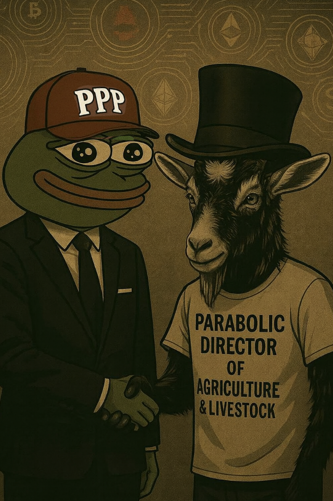

🐐 How Parabolic Got Elected - A Goat’s Journey to Greatness
When the farms were failing and the blockchain was bloated, Parabolic stepped up—horns polished, hooves planted, and eyes locked on yield curves.
This goat didn’t graze. He strategized. While others bought top and sold bottom, Parabolic cultivated a thriving digital farm on-chain and off.
With a single “BAAA,” he moved markets. With a double “BAAA-BAAA,” he secured farming subsidies for meme coin communities across the globe.
Now, as Director of Agriculture & Livestock, he ensures that every yield is green and every meme harvest bountiful.